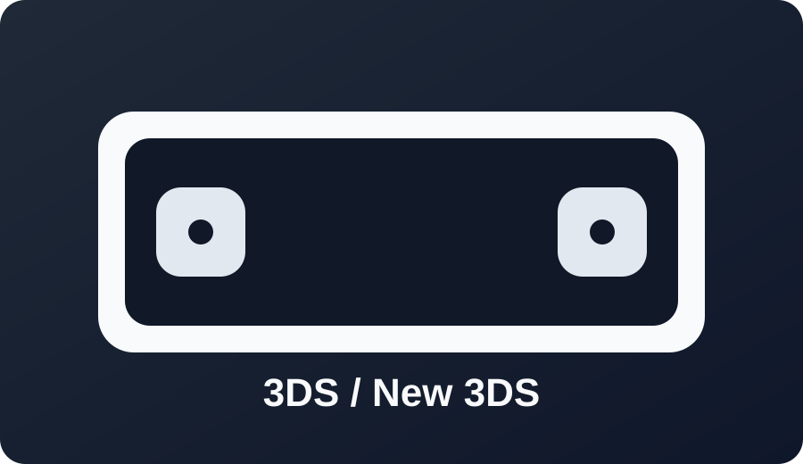

3DS / 3DS XL / New 3DS

Best path: boot9strap route through current 3DS guide methods for your firmware/version.
Use model and region-specific steps when prompted.

Best path: boot9strap route through current 3DS guide methods for your firmware/version.
Use model and region-specific steps when prompted.